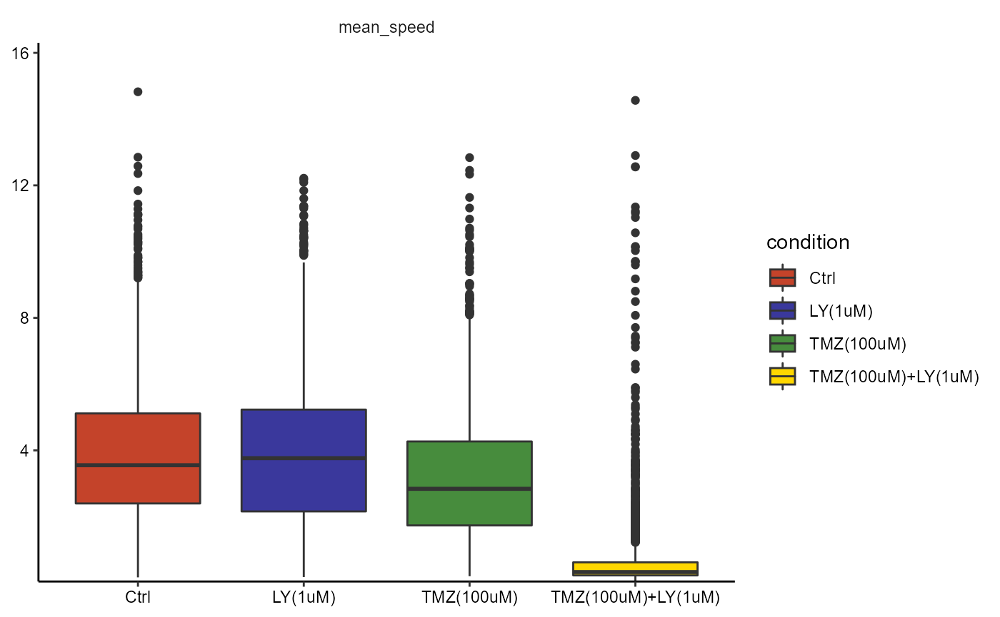
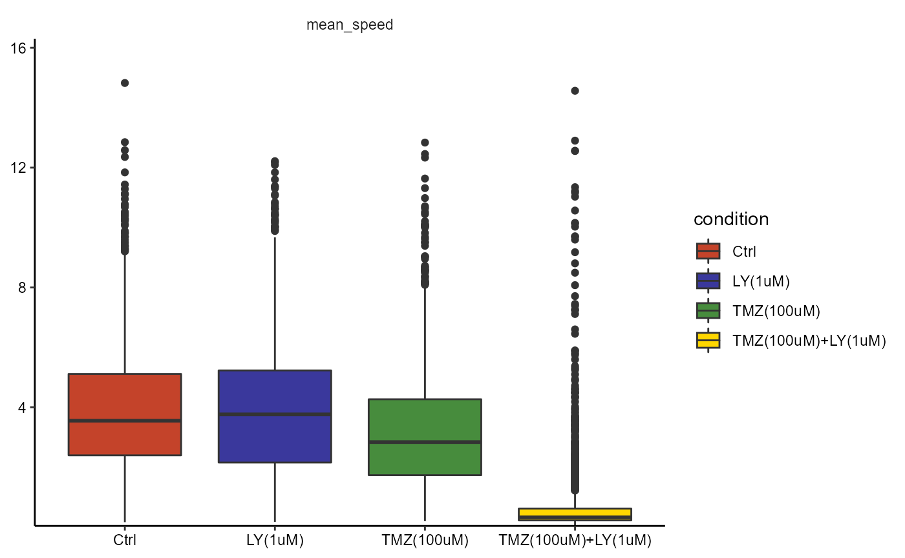

This article elaborates on the vocabulary that is used throughout cypro. You might be familiar with a lot of words but to make sure that everything comes to you as intuitive as possible we list recurring terms and function-/argument names.
1. Imaging process
In time lapse experiments cells are tracked over a defined span of time. A camera repeatedly takes pictures of certain fields of view in all wells of the well plate being imaged. Every image taken at a given time point is referred to as a frame. Most automated microscopy devices allow to define one or more fields of view within one well and after the imaging process is done allow to download all images of that particular field of view as a stack of several frames. This imagestack is often identified with a naming pattern that looks like this A1_1, A1_2, A2_1, A2_2 etc. Well - underscore - field of view index. We refer to this naming pattern as well image which simply is more concise than well_field_of_view_index.
2. Variables
As mentioned during the introduction cypro makes heavy use of the tidyverse. In accordance to the vocabulary of this set of R-packages we refer to the columns of data.frames as data variables or simply variables. Whenever you read variables somewhere in cypro column would be a valid synonym. The same interchangeability applies to the terms observation and rows.
2.1 Data variables
In cypro data of cells is split in five types (click here for more). You will often read the term variables prefixed with the kind of data it belongs to in cypro. For instance, track variables refer to the columns of the track data.frame, well plate variables refer to the columns of the well plate data.frame etc.
2.2 Identifier variables
Every observation represents something. In timelapse cell tracking this is a cell at a given point of time As mentioned during the introduction two variables are needed to identify each observation. First, a frame variable indicating the frame or the point of time during the observation was made. In cypro this variable is called frame_num. Second, a cell ID variable denoting the cell this observation is about. In cypro this variable is called cell_id.
3. Time lapse vs. One time imaging
The cypro package has been developed for analysis of time lapse cell tracking data. This is why the slot @cdata of the cypro object contains a subslot $tracks for a data.frame whose observation represent cells at a given point of time and a subslot $stats for a data.frame whose observations represent summaries by cell. The built in cluster- and correlation pipelines of cypro refer to the $stat slot while time dependent functions such as plotAllTracks() of the migration module refer to the $track slot.
The distinction between stat data.frame and track data.frame becomes obsolete in case of one time imaging experiments as summarizing the data of one cell of one frame by cell ID results in exactly the same data. Therefore the slot $stat of cypro objects deriving from one time imaging experiments is going to be empty. This might sound obvious. However, many function descriptions refer to variables as either stat variables or track variables. Just keep in mind that in case of one time imaging experiments stat- and track variables can be thought of as interchangeable. Clustering and correlation, for instance, will use the track data because every observation can be identified by only the cell ID as the frame number is always 1.
4. Multiple phases
Most time lapse experiments are set up in way that different wells feature different conditions with the goal the characterize the features of cells under different conditions. Some experiment designs include changing conditions over time. This is if, for instance, if all wells start with no condition at all (Control). Then after some time wells are treated with different compounds while the imaging process continues. After another period of time the wells again are treated with certain compounds. This experiment design contains multiple phases. Only one cypro object is needed to contain the data but each phase is handled separately. If your experiment design includes several phases you have to make use of the argument phase whenever you use a function.
This cypro object has been initiated during the tutorials on how to design an experiment, load data and process data. The design includes two phases as the treatment started after the seventeenth frame.
printSummary(object)## An object of class 'cypro'.
##
## Name: TMZ + LY34
## Type: Time Lapse
## Number of Cells: 8407
## Conditions:
## First phase: 'Ctrl'
## Second phase: 'Ctrl', 'LY(1uM)', 'TMZ(100uM)' and 'TMZ(100uM)+LY(1uM)'
## Cell Lines: '168', '233' and 'GSC'
## Well Plates: 'green'
## No variables sets have been defined yet.
plotBoxplot(object, variables = "mean_speed", across = "condition", phase = 1)
plotBoxplot(object, variables = "mean_speed", across = "condition", phase = 2) 

Instead of specifying the phase of interest every time you use a function you can set the phase that is currently of interest as the default by using adjustDefaultInstructions(). As mentioned later cypro objects carry the default input of recurring arguments. Therefore, if you are currently analyzing cells during the second phase you can set the default accordingly instead of denoting it every time.
object <- adjustDefaultInstructions(object, phase = 1)
# argument phase does not need to be specified
plotBoxplot(object, variables = "mean_speed", across = "condition")
object <- adjustDefaultInstructions(object, phase = 2)
# argument phase does not need to be specified
plotBoxplot(object, variables = "mean_speed", across = "condition")
 What has been denoted as the default is only used if the argument of the function is not specified. If you set the default to
What has been denoted as the default is only used if the argument of the function is not specified. If you set the default to phase = 2 you can still plot data of the another phase without using adjustDefaultInstructions() by simply specifying argument phase of the used function.
If your experiment design does not contain several phases the phase-argument is ignored.